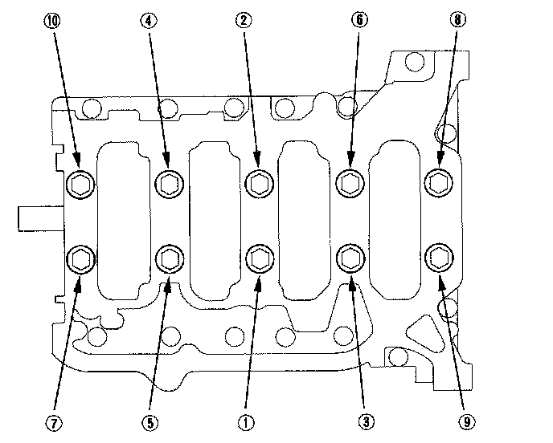
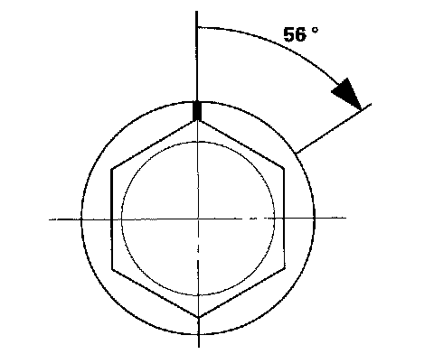
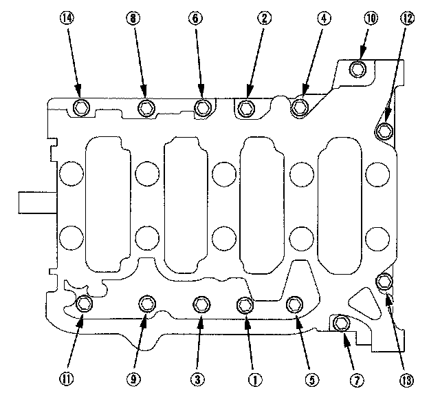
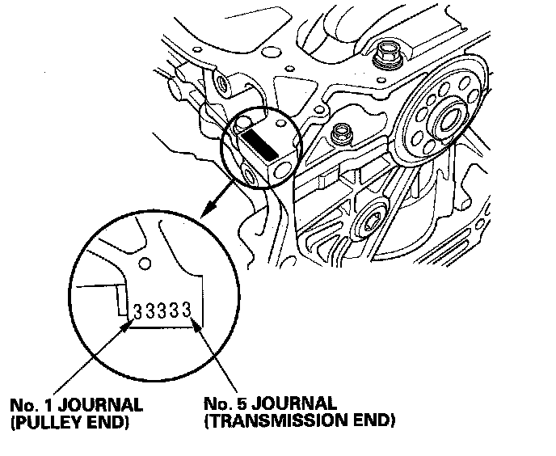

Crankshaft Main Bearing
Crankshaft BearingTighten the bearing cap bolts, in sequence, to 29 N-m (3.0 kgf-m, 22 lbf-ft).

Tighten the bearing cap bolts an additional 56°

Tighten the 8 mm bolts, in sequence, to 22 N-m (2.2 kgf-m, 16 lbf-ft)

Main Journal Code Location

Crankshaft
Main journal diameter
No. 1 journal
Standard or New 54.984-55.008 mm (2.1648-2.1657 in.)
No. 2 journal
Standard or New 54.984-55.008 mm (2.1648-2.1657 in.)
No. 4 journal
Standard or New 54.984-55.008 mm (2.1648-2.1657 in.)
No. 5 journal
Standard or New 54.984-55.008 mm (2.1648-2.1657 in.)
No. 3 journal
Standard or New 54.976-55.000 mm (2.1644-2.1654 in.)
Rod/main journal taper
Standard or New 0.005 mm (0.0002 in.) max.
Service Limit 0.010 mm (0.0004 in.)
Rod/main journal out-of-round
Standard or New 0.005 mm (0.0002 in.) max.
Service Limit 0.010 mm (0.0004 in.)
Crankshaft bearing
Main bearing-to-journal oil clearance
No. 1 journal
Standard or New 0.017-0.041 mm (0.0007-0.0016 in.)
Service Limit 0.050 mm (0.0020 in.)
No. 2 journal
Standard or New 0.017-0.041 mm (0.0007-0.0016 in.)
Service Limit 0.050 mm (0.0020 in.)
No. 4 journal
Standard or New 0.017-0.041 mm (0.0007-0.0016 in.)
Service Limit 0.050 mm (0.0020 in.)
No. 5 journal
Standard or New 0.017-0.041 mm (0.0007-0.0016 in.)
Service Limit 0.050 mm (0.0020 in.)
No. 3 journal
Standard or New 0.025-0.049 mm (0.0010-0.0019 in.)
Service Limit 0.055 mm (0.0022 in.)